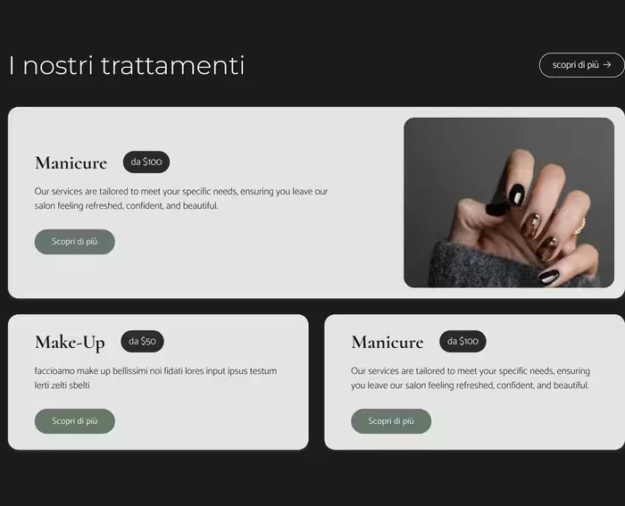

Salute & Bellezza
Dalla vetrina del centro alla scelta del trattamento

Come si sceglie un trattamento?
Una fotografia può comunicare subito il carattere del centro. Chi sta scegliendo un trattamento ha però bisogno anche di informazioni concrete. Il progetto doveva dare visibilità a servizio, prezzo di partenza e contatto senza perdere l’impatto visivo dell’apertura.
Un’identità riconoscibile dalla prima schermata
Il ritratto in bianco e nero occupa l’apertura. Il nome del centro e il richiamo all’appuntamento rimangono sul lato più scuro dell’immagine. Un verde tenue distingue i pulsanti dal resto della composizione.
Dal ritratto alle schede dei trattamenti
Subito sotto abbiamo introdotto un fondo scuro con schede chiare. Nome, descrizione e spazio per il prezzo iniziale mantengono lo stesso ordine; il trattamento in evidenza ha una foto più grande. L’alternanza aiuta a orientarsi anche scorrendo velocemente.


Un percorso per chi deve ancora scegliere
Più avanti la pagina presenta il centro e il team, introduce la possibilità di una consulenza e si chiude con un’area per le domande. Chi desidera un consiglio ha così un’azione diversa dalla richiesta immediata di appuntamento.
Il risultato.
Il risultato è il progetto grafico conservato nel portfolio dello studio. Mostra la gerarchia della home e i punti di contatto con il centro. Testi e prezzi visibili nelle immagini sono dimostrativi.